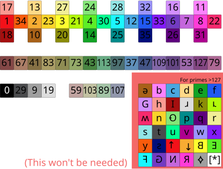

Use this complete reference in the builder
What moves in these references?
Inspect complete costumes: body squares and colours, eyes and mouth, arms and legs, accessories and the numberling. Keep the same rotation centre between poses. Glow is the actual colour change in a supplied costume; do not add an unrelated scanning effect.
The play button samples explicit costume and wait blocks. Script movement, sound synchronization and effects must also be checked in Scratch. The source sprite export retains the original scripts, with a green-flag playback entry point.
Original Jukeebox sound links
These links come from supplied source sprites. No replacement prime melody or transposition is generated here.
Review the supplied 180–990 video
30 fps · 5:22.943. Number/time alignment is manual: the first character lasts longer than a simple 6.4-second slot.
Prime letter colours: supplied palette

Preserve original source colours. The palette is labelled WIP. Later glyph references may have repeated pairs and unverified shapes; review the status below before treating them as established artwork.
Save your review
Mark only what you actually checked.
Later prime glyph cards are not completed official characters. Import complete corrected sprites through the band builder to preserve your own artwork and animation.